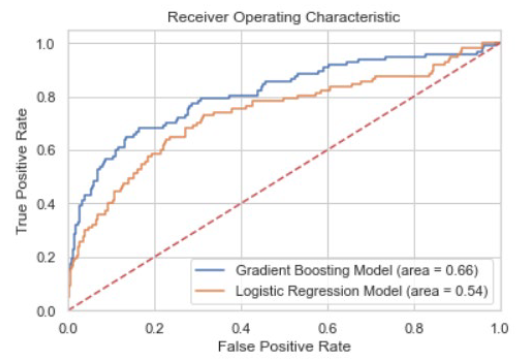
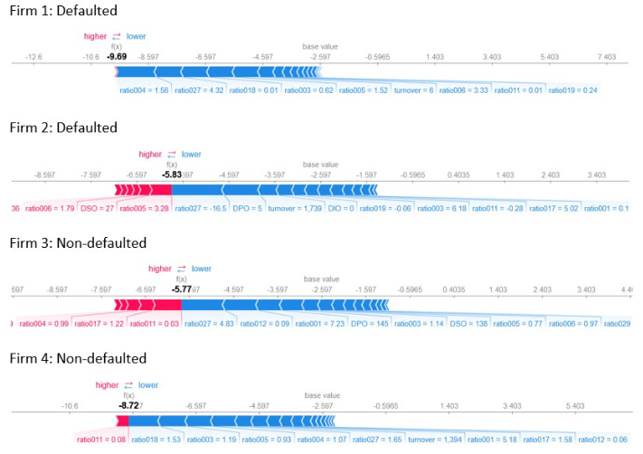

Abstract
As we leap into the dawning digital revolution, the implementation of Artificial Intelligence across various industries is increasing at as fast a pace as is the formation of data. However, as we progress towards the ethical management of said data, we find ourselves facing a limitation of the use of AI-based systems: transparency. The nature of previous and current machine learning models are black-box based which limits our access to understanding how these models arrive to their results. Thus, both providers and consumers are blindisghted as to how the data garnered weighs into said results.
This is where the discussion of Explainable Artificial Intelligence emerges that promises an increase in the trust and transparency of Artificial Intelligence systems. Trust is key to building confidence and acceptence of Artificial Intelligence-based decision-making systems regardless of the industry it is implemented in. This study explores a survey on Explainable Artificial Intelligence to understand how it promotes transparency and will be followed by a replicaton of an empirical analysis of SMEs requesting peer-to-peer lending using an Explainable Artifiical Intelligence model to understand how their financial characteristics can be used to predict future behaviour.
Research Purpose
This mixed method research is based on a written paper by Bussmann et al (2020) to raise the key research question:
How can transparency be encouraged using Explainable AI in credit risk management?
This study uses a mixed methods research methodology and attempts to conduct parallel quantitative and qualitative research. The above research question is broken down into the following individual specific research questions that include quantitative and qualitative sub-questions that will be integrated back to the main research question.
The first sub-question below is to be addressed using the qualitative component of the study.
RQ1: How does Explainable Artificial Intelligence increase transparency?
The component of the study utilises an existing publication on a survey on Explainable AI. By answering this research question, the qualitative study seeks to explore how Explainable AI has been utilised to promote transparency.
The second sub-question is to be answered by the quantitative component of this study, specified as below.
RQ2: How can Explainable Artificial Intelligence be used to implement the transparency of decision making within peer-to-peer lending?
As this study uses a mixed methods research, the quantitative and qualitative components should be connected with each other rather than be studied separately. The connection between the quantitative and qualitative studies begins at the research design - the construction of the research questions.
Analysis Approach
Qualitative Analysis
This study refers to a survey on Explainable AI by Adadi, A et al. (2018) to answer the qualitative research question of how Explainable AI promotes transparency.
Quantitative Analysis
The data considered was sourced from a study by Guidici, P. et al that was initially supplied by the European External Credit Assessment Institution (ECAI). They specialise in credit scoring for peer-to-peer lending platforms focused on SME commercial lending. The dataset is made up of official financial information on 4,514 Italian SMEs that represent the target of peer-to-peer lending platforms. The information about the status where 0 = active and 1 = defaulted are also included. The dataset shows 11.03% of the firms have defaulted.
The study aims to recreate the XGBoost model that was proposed by Bussmann et al (2020) that was able to increase the performance of the prediction of an existing logistic regression scoring model constructed by Giudici (2018), Ahelegby et al. (2019), and Giudici et al.(2019). The results from the model will then be explained by employing Shapley values.
The combination of both the qualitative and quantitative analysis will be used to show how the application of Explainable Artificial Intelligence can increase the transparency of decision making models.
Results & Discussion
Python was used for this study. The dataset from the ECAI was split into a training set of 80& and a test set of 20%. A logistic regression model was first estimated on the training set then applied to the test set. This was used as a basis for comparison with the gradient boosting model XGBoost. The XGBoost model was then also estimated on the training set to be applied to the test set. The ROC curves of the two models are as follows:
Note that the XGBoost improves the predictive accuracy in comparison to the logistic regression model, where the graph indicates an increase from 0.54 to 0.66. Shapley values were calculated for four randomly selected firms in the data set to indicate which variables contributed towards the predictions of whether or not that firm would default.
The XGBoost model combined with the interpretation of results by Shapley values is a suitable alternative with respect to the lack of transparency in black-box decision-making models. The concept of black-box model that have been exploited by technological companies in order to protect their intellectual property to conserve competitiveness. This contradicts the need for responsible AI whose three pillars are accountability, responsiblity and transparency.
Tje use of XAI systems generally requires justifications for a particular outcome, especially in cases where unexpected decisions are made. This allows for auditable ways to support algorithmic decisions to encourage fair and ethical decisions that will build trust. In addition to justifying a decision, there is also a deeper understanding to unknown vulnerabilities that can assist debugging.
As discussed in the survey by Adadi (2018), AI tools in the financial services poses queries around fair lending despite the fact that the financial indsutry is heavily regulated and are responsible for making fair decisions. XAI implementation provides an outlet to provide explanations around credit application decisions.
The image below shows the contribution of each explanatory variable according to the Shapley's decomposition for four predictions, two of which have defaulted and the others have not. The red bars are an indication of low variable importance and the blue bars indicidate a high variable importance.
Conclusion
The replication of the study by Bussman et al (2020) shows that the use of Explainable Artificial Intelligence, in this case the XGBoost model alongside interpretation by Shapley values, reaffirms that the use of Explainable AI can indeed increase transparency in decision making models. This meet the current need for high predictive accuracy alongside high interpretability in this era of transparent data management.
Future studies would propose to explore alternative algorithms that can further improve predicitive accuracy whilst maintaining or even improving the model interpretability. As also proposed by Bussmann et al. (2020), an alternative would also be to improve model development by utilising the Shapley values to identify key features that can improve model predictions. Stricter implementation of legal responsibilities should also be put in place and monitored. This responsibility lies within the organisations utilising the data for their decision making systems. Relating this to the current EU GDPR regulations, it remains to be quite general with respect to the Artificial Intelligence systems. More research should be carried out to explore possible technical and theoretical checks to be put in place to regulate the ethical use of data within decision making.